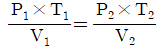
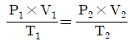
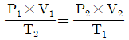
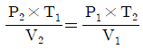

침투비파괴검사기능사 (2010-03-28 기출문제)
1과목: 침투탐상시험법(대략구분)
1. 기체방사성 동위원소법에는 Kr-85를 추적가스로 많이 사용한다. 이때 방출되는 이온으로 옳은 것은?(문제 오류로 정답이 정확하지 않습니다. 정답지를 찾지못하여 임의 정답 1번으로 설정하였습니다. 정답을 아시는 분께서는 오류 신고를 통하여 정답 입력 부탁 드립니다.)
- X선
- 알파선
- 베타선
- 감마선
(정답률: 77%)

2. 초음파탐상검사의 진동자 재질로 사용되지 않는 것은?
- 수정
- 황산리튬
- 할로겐화은
- 티탄산바륨
(정답률: 56%)
3. 자분탐상시험법에 대한 설명으로 옳은 것은?(문제 오류로 정답이 정확하지 않습니다. 정답지를 찾지못하여 임의 정답 1번으로 설정하였습니다. 정답을 아시는 분께서는 오류 신고를 통하여 정답 입력 부탁 드립니다.)
- 잔류법은 시험체에 외부로부터 자계를 준 상태에서 결함에 자분을 흡착시키는 방법이다.
- 연속법은 시험체에 외부로부터 주어진 자계를 소거한 후 결함에 자분을 흡착시키는 방법이다.
- 잔류법은 시험체에 잔류하는 자속밀도가 결함 누설자속에 영향을 미친다.
- 연속법은 결함누설자속을 최소로 하기 위해 포화자속밀도가 얻어지는 자계의 세기를 필요로 한다.
(정답률: 94%)
4. 두께 100mm 인 강판 용접부에 대한 내부균열의 위치와 깊이를 검출하는데 가장 적합한 비파괴검 사법은?(문제 오류로 정답이 정확하지 않습니다. 정답지를 찾지못하여 임의 정답 1번으로 설정하였습니다. 정답을 아시는 분께서는 오류 신고를 통하여 정답 입력 부탁 드립니다.)
- 방사선투과시험
- 초음파탐상시험
- 자분탐상시험
- 침투탐상시험
(정답률: 60%)
5. 시험체를 가압 또는 감압하여 일정한 시간이 지난 후 압력변화를 계측하여 누설검사 하는 방법을 무엇이라 하는가?
- 기포 누설검사
- 암모니아 누설검사
- 방치법에 의한 누설검사
- 전위차에 의한 누설검사
(정답률: 56%)
6. 침투탐상시험의 원리에 대한 설명으로 옳은 것은?(문제 오류로 정답이 정확하지 않습니다. 정답지를 찾지못하여 임의 정답 1번으로 설정하였습니다. 정답을 아시는 분께서는 오류 신고를 통하여 정답 입력 부탁 드립니다.)
- 시험체 내부에 있는 결함을 눈으로 보기 쉽도록 시약을 이용하여 지시모양을 관찰하는 방법이다
- 결함부에 발생하는 자계에 의한 자분의 부착을 이용하여 관찰하는 방법이다.
- 결함부에 현상제를 투과시켜 그 상을 재생하여 내부에 결함의 실상을 관찰하는 방법이다.
- 시험체 표면에 열린 결함을 눈으로 보기 쉽도록 시약을 이용하여 확대된 지시모양을 확대된 지시모양을 관찰하는 방법이다.
(정답률: 77%)
7. 이상 기체의 압력이 P, 체적이V, 온도가T 일 때 보일-샤를의 법칙에 대한 공식으로 옳은 것은?(문제 오류로 정답이 정확하지 않습니다. 정답지를 찾지못하여 임의 정답 1번으로 설정하였습니다. 정답을 아시는 분께서는 오류 신고를 통하여 정답 입력 부탁 드립니다.)




(정답률: 62%)
8. 지름 20㎝, 두께 1㎝, 길이 1m인 관에 열처리로 인한 축방향의 균열이 많이 발생하고 있다. 이러한 균열을 탐지하기 위하여 자분탐상검사를 실시하고자 한다. 어떤 방법이 가장 적절하겠는가?(문제 오류로 정답이 정확하지 않습니다. 정답지를 찾지못하여 임의 정답 1번으로 설정하였습니다. 정답을 아시는 분께서는 오류 신고를 통하여 정답 입력 부탁 드립니다.)
- 프로드(prod)에 의한 자화
- 요크(yoke)에 의한 자화
- 전류관통법(central conductor)에 의한 자화
- 케이블(cable)에 의한 자화
(정답률: 81%)
9. 시험체의 표면이 열려있는 결함의 검출에 가장 적합한 비파괴검사법은?(문제 오류로 정답이 정확하지 않습니다. 정답지를 찾지못하여 임의 정답 1번으로 설정하였습니다. 정답을 아시는 분께서는 오류 신고를 통하여 정답 입력 부탁 드립니다.)
- 침투탐상시험
- 초음파탐상시험
- 방사선투과시험
- 중성자투과시험
(정답률: 84%)
10. 두께가 일정하지 않고 표면 거칠기가 심한 시험체 내부결함을 검출할 수 있는 비파괴검사법으로 옳은 것은?(문제 오류로 정답이 정확하지 않습니다. 정답지를 찾지못하여 임의 정답 1번으로 설정하였습니다. 정답을 아시는 분께서는 오류 신고를 통하여 정답 입력 부탁 드립니다.)
- 방사선투과시험
- 자분탐상시험
- 초음파탐상시험
- 와전류탐상검사
(정답률: 60%)
11. 표면코일을 사용하는 와전류탐상시험에서 시험코일과 시험체 사이의 상대거리의 변화에 의해 지시가 변화하는 것을 무엇이라 하는가?(문제 오류로 정답이 정확하지 않습니다. 정답지를 찾지못하여 임의 정답 1번으로 설정하였습니다. 정답을 아시는 분께서는 오류 신고를 통하여 정답 입력 부탁 드립니다.)
- 공진효과
- 표피 효과
- 리프트 오프 효과
- 오실로스코프 효과
(정답률: 50%)
12. 각종 비파괴검사법과 그 원리가 틀리게 짝지어진 것은?(문제 오류로 정답이 정확하지 않습니다. 정답지를 찾지못하여 임의 정답 1번으로 설정하였습니다. 정답을 아시는 분께서는 오류 신고를 통하여 정답 입력 부탁 드립니다.)
- 방사선투과시험 - 투과성
- 초음파탐상시험 - 펄스반사법
- 자분탐상시험 - 자분의 침투력
- 와전류탐상검사 - 전자유도작용
(정답률: 72%)
13. 방사선작업 종사자가 착용하는 개인피폭 선량계에 속하지 않는 것은?(문제 오류로 정답이 정확하지 않습니다. 정답지를 찾지못하여 임의 정답 1번으로 설정하였습니다. 정답을 아시는 분께서는 오류 신고를 통하여 정답 입력 부탁 드립니다.)
- 서베이미터
- 필름배지
- 포켓도시미터
- 열형광선량계
(정답률: 84%)
14. 와전류탐상검사에 대한 설명으로 올바른 것은?
- 표면 및 내부결함 모두가 검출 가능하다.
- 금속, 비금속 등 거의 모든 재료에 적용가능 하고 현장적용을 쉽게 할 수 있다.
- 비접촉으로 고속탐상이 가능하다.
- 미세한 균열의 성장유무를 감시하는데 적합하다.
(정답률: 64%)
15. 감마선의 에너지가 0.3~0.6MeV 이고, 반감기가 약 75일 이며 강관 등의 투과사진 촬영에 많이 사용되는 선원은?
- Co-60
- Ir-192
- Cs-137
- Tm-170
(정답률: 56%)
16. X선발생장치의 X선관은 진공으로 되어 있다. 그 이유는?
- 전자의 이동을 방지하기 위한 것이다.
- 필라멘트의 산화를 증대시키기 위한 것이다.
- 연소가 잘 이루어질 수 있도록 하기 위한 것이다.
- 전자의 이동을 원활히 하고 필라멘트를 보호하기 위해서이다.
(정답률: 67%)
17. 촬영하고자 하는 시험부를 제외한 불필요한 부의를 덮어 산란방사선을 제거 또는 감소하기 위하여 사용되는 것은?(문제 오류로 정답이 정확하지 않습니다. 정답지를 찾지못하여 임의 정답 1번으로 설정하였습니다. 정답을 아시는 분께서는 오류 신고를 통하여 정답 입력 부탁 드립니다.)
- 필터
- 마스크
- 조도계
- 후면증감지
(정답률: 80%)
18. 방사선투과시험시 노출량에 영향을 미치는 요소와 거리가 먼 것은?(문제 오류로 정답이 정확하지 않습니다. 정답지를 찾지못하여 임의 정답 1번으로 설정하였습니다. 정답을 아시는 분께서는 오류 신고를 통하여 정답 입력 부탁 드립니다.)
- 필름의 종류
- 증감지의 종류
- 시험체의 종류
- 투과도계의 종류
(정답률: 78%)
19. 방사선투과검사에서 노출도표와 관련하여 등가인자란 무엇을 뜻하는가?(문제 오류로 정답이 정확하지 않습니다. 정답지를 찾지못하여 임의 정답 1번으로 설정하였습니다. 정답을 아시는 분께서는 오류 신고를 통하여 정답 입력 부탁 드립니다.)
- 동일한 노출시간에 의해 얻을 수 있는 필름 농도의 환산계수
- 동일한 농도를 얻기 위한 동일 재질의 두께 차이에 따른 노출인자
- 동일한 두께의 여러 재질에 따른 노출시간의 비를 나타내는 인자
- 철과 비교하여 동일한 노출조건으로 얻을 수 있는 다른재질의 노출조건을 구할수 있는 인자
(정답률: 50%)
20. 선원송출방식의 감마선조사기에서 감마선원이 들어있는 곳은?(문제 오류로 정답이 정확하지 않습니다. 정답지를 찾지못하여 임의 정답 1번으로 설정하였습니다. 정답을 아시는 분께서는 오류 신고를 통하여 정답 입력 부탁 드립니다.)
- 안내튜브
- 제어튜브
- 선원홀더
- 송출와이어
(정답률: 59%)
2과목: 침투탐상관련규격(대략구분)
21. 방사선의 강도와 거리의 관계를 옳게 설명한 것은?(문제 오류로 정답이 정확하지 않습니다. 정답지를 찾지못하여 임의 정답 1번으로 설정하였습니다. 정답을 아시는 분께서는 오류 신고를 통하여 정답 입력 부탁 드립니다.)
- 방사선의 강도는 거리에 비례한다.
- 방사선의 강도는 거리에 반비례한다.
- 방사선의 강도는 거리의 제곱에 비례한다.
- 방사선의 강도는 거리의 제곱에 반비례한다.
(정답률: 74%)
22. 다음 방사선 중 선질계수가 가장 큰 것은?(문제 오류로 정답이 정확하지 않습니다. 정답지를 찾지못하여 임의 정답 1번으로 설정하였습니다. 정답을 아시는 분께서는 오류 신고를 통하여 정답 입력 부탁 드립니다.)
- 엑스선
- 알파선
- 감마선
- 중성자선
(정답률: 79%)
23. 중성자수는 동일하나 원자번호, 질량수가 다른 핵종을 무엇이라 하는가?(문제 오류로 정답이 정확하지 않습니다. 정답지를 찾지못하여 임의 정답 1번으로 설정하였습니다. 정답을 아시는 분께서는 오류 신고를 통하여 정답 입력 부탁 드립니다.)
- 동중체
- 핵이성체
- 동위원소
- 동중성자핵
(정답률: 64%)
24. 방사선투과검사에서 R&D 커브라고도 하며 노출량을 조절하여 투과사진의 농도를 변경하고자 할 때 필요한 것은?(문제 오류로 정답이 정확하지 않습니다. 정답지를 찾지못하여 임의 정답 1번으로 설정하였습니다. 정답을 아시는 분께서는 오류 신고를 통하여 정답 입력 부탁 드립니다.)
- 노출도표
- 초점의 크기
- 필름의 특성곡선
- 동위원소의 붕괴곡선
(정답률: 62%)
25. 방서선 투과시험시 노출도표에 명시하지 않아도 되는 것은?(문제 오류로 정답이 정확하지 않습니다. 정답지를 찾지못하여 임의 정답 1번으로 설정하였습니다. 정답을 아시는 분께서는 오류 신고를 통하여 정답 입력 부탁 드립니다.)
- 현상조건
- 증감지의 종류
- 장비의 제조일자
- 선원과 필름사이의 거리
(정답률: 30%)
26. 강용접 이음부의 방사선투과 시험방법(KS B 0845)에 따라 강관 원둘레 용접이음부의 내부필름 촬영 방법으로 시험부에서의 가로 갈라짐의 검출을 필요로 하는 경우, 만족하는 시험부의 유효길이는 얼마인가?(문제 오류로 정답이 정확하지 않습니다. 정답지를 찾지못하여 임의 정답 1번으로 설정하였습니다. 정답을 아시는 분께서는 오류 신고를 통하여 정답 입력 부탁 드립니다.)
- 관의 원둘레 길이의 1/2이하
- 관의 원둘레 길이의 1/4이하
- 관의 원둘레 길이의 1/8이하
- 관의 원둘레 길이의 1/12이하
(정답률: 42%)
27. 티탄 용접부의 방사선 투과시험방법(KS D 0239)에 따른 촬영배치를 설명한 것으로 틀린 것은?(문제 오류로 정답이 정확하지 않습니다. 정답지를 찾지못하여 임의 정답 1번으로 설정하였습니다. 정답을 아시는 분께서는 오류 신고를 통하여 정답 입력 부탁 드립니다.)
- 투과도계는 시험부 유효거리 내에서 가장 가는 선이 바깥쪽이 되도록 놓는다.
- 관 길이용접부의 이중벽 한면 촬영방법의 경우 투과도계를 시험부의 필름쪽 면 위에 놓는다.
- 선원과 투과도계 사이의 거리(L1)는 시험부의 유효길이(L3)의 5배 이상으로 하여야 한다.
- 촬영시 조사범위를 필요 이상으로 크게 하지 않기 위해 조리개를 사용한다.
(정답률: 37%)
28. 개인 방사선관리용 측정기 중 방사선작업종사자의 장기간 피폭선량 감시에 적합하지 않은 것은?(문제 오류로 정답이 정확하지 않습니다. 정답지를 찾지못하여 임의 정답 1번으로 설정하였습니다. 정답을 아시는 분께서는 오류 신고를 통하여 정답 입력 부탁 드립니다.)
- 필름배지
- 포켓 선량계
- 열형광 선량계
- 형광유리 선량계
(정답률: 50%)
29. 강용접 이음부의 방사선투과 시험방법(KS B 0846)에서 투과사진에 의해 검출된 결함이 제3종인 경우 결함의 분류로 옳은 것은?(문제 오류로 정답이 정확하지 않습니다. 정답지를 찾지못하여 임의 정답 1번으로 설정하였습니다. 정답을 아시는 분께서는 오류 신고를 통하여 정답 입력 부탁 드립니다.)
- 1류
- 2류
- 3류
- 4류
(정답률: 58%)
30. 강용접 이음부의 방사선투과 시험방법(KS B 0845)에 따라 강판 맞대기용접부의 모재두께가 22mm인 용접부를 촬영하고자 할 때 필요한 계조계의 종류는?(문제 오류로 정답이 정확하지 않습니다. 정답지를 찾지못하여 임의 정답 1번으로 설정하였습니다. 정답을 아시는 분께서는 오류 신고를 통하여 정답 입력 부탁 드립니다.)
- 10형
- 15형
- 20형
- 25형
(정답률: 71%)
31. 주강품의 방사선투과 시험방법(KS D 0227)에서 블로홀, 모래 박힘 및 개재물에 대한 시험부의 호칭두께와 시험시야의 크기가 틀리게 연결된것은?(문제 오류로 정답이 정확하지 않습니다. 정답지를 찾지못하여 임의 정답 1번으로 설정하였습니다. 정답을 아시는 분께서는 오류 신고를 통하여 정답 입력 부탁 드립니다.)
- 시험부 호칭두께 10mm이하 ; 시험시야의 크기(지름) 20mm
- 시험부 호칭두께 10mm초과 20mm이하 ; 크기(지름) 30mm
- 시험부 호칭두께 20mm초과 40mm이하 ; 크기(지름) 40mm
- 시험부 호칭두께 40mm초과 80mm이하 ; 크기(지름) 50mm
(정답률: 58%)
32. 방사선 작업종사자의 필름배지 착용에 대한 설명중 틀리 것은?(문제 오류로 정답이 정확하지 않습니다. 정답지를 찾지못하여 임의 정답 1번으로 설정하였습니다. 정답을 아시는 분께서는 오류 신고를 통하여 정답 입력 부탁 드립니다.)
- 가능한 한 상체에 착용한다.
- 입사방향을 향하게 착용한다.
- 방호의 바깥에 착용한다.
- 착용기간은 피폭선량을 예상해서 정한다.
(정답률: 알수없음)
33. 강용접 이음부의 방사선투과 시험방법(KS B 0845)에 따른 투과사진의 농도 범의로 옳은 것은?(문제 오류로 정답이 정확하지 않습니다. 정답지를 찾지못하여 임의 정답 1번으로 설정하였습니다. 정답을 아시는 분께서는 오류 신고를 통하여 정답 입력 부탁 드립니다.)
- A급인 경우 ; 1.0이상 3.5이하 B급인 경우 ; 1.5이상 3.5이하
- A급인 경우 ; 1.8이상 3.5이하 B급인 경우 ; 1.3이상 3.5이하
- A급인 경우 ; 1.3이상 4.0이하 B급인 경우 ; 1.8이상 4.0이하
- A급인 경우 ; 1.0이상 4.0이하 B급인 경우 ; 1.5이상 4.0이하
(정답률: 34%)
34. 강용접 이음부의 방사선투과 시험방법(KS B 0845)에 의한 투과사진의 결함 분류시 결함 길이를 구하지 않고 바로 결함을 분류하는 것은?(문제 오류로 정답이 정확하지 않습니다. 정답지를 찾지못하여 임의 정답 1번으로 설정하였습니다. 정답을 아시는 분께서는 오류 신고를 통하여 정답 입력 부탁 드립니다.)
- 갈라짐
- 융합불량
- 용입불량
- 슬래그 혼입
(정답률: 48%)
35. 강용접 이음부의 방사선투과 시험방법(KS B 0845)에서 투과사진의 관창에 사용하는 관찰기의 종류로 옳은 것은?(문제 오류로 정답이 정확하지 않습니다. 정답지를 찾지못하여 임의 정답 1번으로 설정하였습니다. 정답을 아시는 분께서는 오류 신고를 통하여 정답 입력 부탁 드립니다.)
- D10, D20, D30, D40
- D10, D20, D30, D30
- E10, E15, E20, E25
- E10, E11, E12, E13
(정답률: 50%)
36. 0.1Sv는 몇[mrem]인가?(문제 오류로 정답이 정확하지 않습니다. 정답지를 찾지못하여 임의 정답 1번으로 설정하였습니다. 정답을 아시는 분께서는 오류 신고를 통하여 정답 입력 부탁 드립니다.)
- 0.01
- 10
- 100
- 1000
(정답률: 65%)
37. 방사선에 대한 각종 양과 단위의 연결이 잘못된것은?
- 방사능 ; Ci
- 조사선량 ; R
- 선량당량 ; Bq
- 흡수선량 ; Gy
(정답률: 24%)
38. 원자력법령에서 일반인에 대한 연간 유효선량한도는 얼마로 규정하고 있는가?
- 1밀리시버트
- 10밀리시버트
- 75밀리시버트
- 150밀리시버트
(정답률: 8%)
39. 1일 평균 8시간 작업에 0.8Gy 흡수선량으로 γ선에 피폭되었다면 시간당 등가선량(Sv)은?(문제 오류로 정답이 정확하지 않습니다. 정답지를 찾지못하여 임의 정답 1번으로 설정하였습니다. 정답을 아시는 분께서는 오류 신고를 통하여 정답 입력 부탁 드립니다.)
- 0.08
- 0.1
- 0.64
- 0.8
(정답률: 58%)
40. 방사선에 대한 단위환산이 틀린 것은?(문제 오류로 정답이 정확하지 않습니다. 정답지를 찾지못하여 임의 정답 1번으로 설정하였습니다. 정답을 아시는 분께서는 오류 신고를 통하여 정답 입력 부탁 드립니다.)
- 1Sv=100rem
- 1Gy=100rad
- 1rad=10-4J/Kg
- 1R=2.5810-4C/Kg
(정답률: 62%)
3과목: 금속재료일반 및 용접일반(대략구분)
41. 웹 페이지에서 사용할 수 있는 이미지로 8비트 색상을 지원하는 대표적인 이미지 압축 포맷은?(문제 오류로 정답이 정확하지 않습니다. 정답지를 찾지못하여 임의 정답 1번으로 설정하였습니다. 정답을 아시는 분께서는 오류 신고를 통하여 정답 입력 부탁 드립니다.)
- GIF
- JPEG
- TIF
- BMP
(정답률: 54%)
42. 채팅할 때의 네티켓으로 옳지 않는 것은?
- 마주보고 이야기하는 마음가짐으로 임한다.
- 대화방에 처음 들어가면 지금까지 진행된 대화의 내용과 분위기를 어느 정도 경청하는 것이 좋다.
- 만나고 헤어질 때에는 인사를 한다.
- 비어, 속어, 은어 등을 사용하여 대화를 한다.
(정답률: 60%)
43. 다음 중 시스템 프로그램의 종류가 아닌 것은?(문제 오류로 정답이 정확하지 않습니다. 정답지를 찾지못하여 임의 정답 1번으로 설정하였습니다. 정답을 아시는 분께서는 오류 신고를 통하여 정답 입력 부탁 드립니다.)
- 적재 프로그램
- 운영체제
- 라이브러리 프로그램
- 응용 프로그램
(정답률: 43%)
44. 인터넷에서 사용자가 원하는 정보를 탐색할 때 사용하는 것은?(문제 오류로 정답이 정확하지 않습니다. 정답지를 찾지못하여 임의 정답 1번으로 설정하였습니다. 정답을 아시는 분께서는 오류 신고를 통하여 정답 입력 부탁 드립니다.)
- 쿠키
- 원도미디어
- 검색엔진
- 플러그 인
(정답률: 60%)
45. 인터넷 상의 사이트 주소의 기관성격 중 국제 기구를 의미하는 것은?
- edu
- gov
- int
- com
(정답률: 43%)
46. 단조나 압연을 하여 가공경화 한 금속재료를 고온으로 가열할 때 일어나는 현상이 아닌 것은?(문제 오류로 정답이 정확하지 않습니다. 정답지를 찾지못하여 임의 정답 1번으로 설정하였습니다. 정답을 아시는 분께서는 오류 신고를 통하여 정답 입력 부탁 드립니다.)
- 내부응력제거
- 결정입자의 성장저지
- 재결정
- 회복
(정답률: 59%)
47. 비커스 경도계에서 사용하는 압입자는?(문제 오류로 정답이 정확하지 않습니다. 정답지를 찾지못하여 임의 정답 1번으로 설정하였습니다. 정답을 아시는 분께서는 오류 신고를 통하여 정답 입력 부탁 드립니다.)
- 꼭지각이 136˚인 피라미드형 다이아몬드 콘
- 꼭지각이 120˚인 피라미드형 다이아몬드 콘
- 지름이 1/16인치인 강구
- 지름이 1/16인치인 초경 합금구
(정답률: 50%)
48. 절삭할 때 칩을 잘게 하고 피삭성을 좋게 만든 쾌삭강은 어떤 원소를 첨가한 것인가?(문제 오류로 정답이 정확하지 않습니다. 정답지를 찾지못하여 임의 정답 1번으로 설정하였습니다. 정답을 아시는 분께서는 오류 신고를 통하여 정답 입력 부탁 드립니다.)
- S, Pb
- Cr, Ni
- Mn, Mo
- Cr, W
(정답률: 70%)
49. 다음의 탄소강 조직 중 상온에서 경도가 가장 높은 것은?
- 시멘타이트
- 페라이트
- 펄라이트
- 오스테나이트
(정답률: 20%)
50. 철강의 냉간 가공시에 청열 메짐이 생기는 온도 구간이 있으므로 이 구간에서 가공을 피해야 한다. 이 구간의 온도는?
- 약 100~210℃
- 약 210~360℃
- 약 420~550℃
- 약 610~730℃
(정답률: 40%)
51. Al-Cu-Si계 합금으로 Si를 넣어 주조성을 개선하고 Cu를 넣어 절삭성을 좋게 한 합금은?(문제 오류로 정답이 정확하지 않습니다. 정답지를 찾지못하여 임의 정답 1번으로 설정하였습니다. 정답을 아시는 분께서는 오류 신고를 통하여 정답 입력 부탁 드립니다.)
- 라우탈
- 로엑스
- 두랄루민
- 코비탈륨
(정답률: 70%)
52. 7-3황동에 Sn을 1% 첨가한 것으로 전연성이 좋아관 또는 판을 만들어 증발기, 열교환기 등에 사용되는 것은?(문제 오류로 정답이 정확하지 않습니다. 정답지를 찾지못하여 임의 정답 1번으로 설정하였습니다. 정답을 아시는 분께서는 오류 신고를 통하여 정답 입력 부탁 드립니다.)
- 코슨 합금
- 네이벌 황동
- 애드미럴티 합금
- 플래티나이트 합금
(정답률: 29%)
53. 아공석강과 과공석강을 구분하는 탄소의 함유량(%)은?
- 약 0.80%
- 약 2.0%
- 약 4.30%
- 약 6.67%
(정답률: 37%)
54. 다음 특수강에 대한 설명 중 틀린 것은?
- 고Mn 강의 조직은 오스테나이트이다.
- 튜콜강은 저Mn 강의 대표적 이름이다.
- 고속도강의 표준성분은 18%V-4%Ni-1%Cr 이다.
- 수인법으로 행한 강을 수인강이라 한다.
(정답률: 54%)
55. 다음 중 저용융점 금속이 아닌 것은?(문제 오류로 정답이 정확하지 않습니다. 정답지를 찾지못하여 임의 정답 1번으로 설정하였습니다. 정답을 아시는 분께서는 오류 신고를 통하여 정답 입력 부탁 드립니다.)
- Fe
- Sn
- Pb
- In
(정답률: 57%)
56. 물과 얼음의 평형상태에서 자유도는 얼마인가?(문제 오류로 정답이 정확하지 않습니다. 정답지를 찾지못하여 임의 정답 1번으로 설정하였습니다. 정답을 아시는 분께서는 오류 신고를 통하여 정답 입력 부탁 드립니다.)
- 0
- 1
- 2
- 3
(정답률: 54%)
57. 다음 중 경질 자성 재료가 아닌 것은?(문제 오류로 정답이 정확하지 않습니다. 정답지를 찾지못하여 임의 정답 1번으로 설정하였습니다. 정답을 아시는 분께서는 오류 신고를 통하여 정답 입력 부탁 드립니다.)
- 퍼멀로이
- 희토류계 자석
- 페라이트 자석
- 알니코 자석
(정답률: 79%)
58. 피복 금속 아크 용접에서 용접전류는 150A, 아크 전압이 30V이고, 용접 속도가 10cm/min일 때 용접 입열은 몇 J/cm인가?(문제 오류로 정답이 정확하지 않습니다. 정답지를 찾지못하여 임의 정답 1번으로 설정하였습니다. 정답을 아시는 분께서는 오류 신고를 통하여 정답 입력 부탁 드립니다.)
- 2700
- 27000
- 270000
- 2700000
(정답률: 59%)
59. 아세틸렌가스 발생기를 카바이드와 물을 작용시키는 방법에 따라 분류할 때 해당되지 않는 것은?(문제 오류로 정답이 정확하지 않습니다. 정답지를 찾지못하여 임의 정답 1번으로 설정하였습니다. 정답을 아시는 분께서는 오류 신고를 통하여 정답 입력 부탁 드립니다.)
- 주수식 발생기
- 중압식 발생기
- 침수식 발생기
- 투입식 발생기
(정답률: 44%)
60. 피복 금속 아크 용접봉의 취급시 주의할 사항에 대한 설명으로 틀린 것은?(문제 오류로 정답이 정확하지 않습니다. 정답지를 찾지못하여 임의 정답 1번으로 설정하였습니다. 정답을 아시는 분께서는 오류 신고를 통하여 정답 입력 부탁 드립니다.)
- 용접봉은 건조하고 진동이 없는 장소에 보관한다.
- 용접봉은 피복제가 떨어지는 일이 없도록 통에 담아 넣어서 사용한다.
- 저수소계 용접봉은 300~350℃에서 1~2시간 정도 건조 후 사용한다.
- 용접봉은 사용하기 전에 편심상태를 확인한 후 사용하여야 하며, 이때의 편심률은 20% 이내 이어야 한다.
(정답률: 39%)